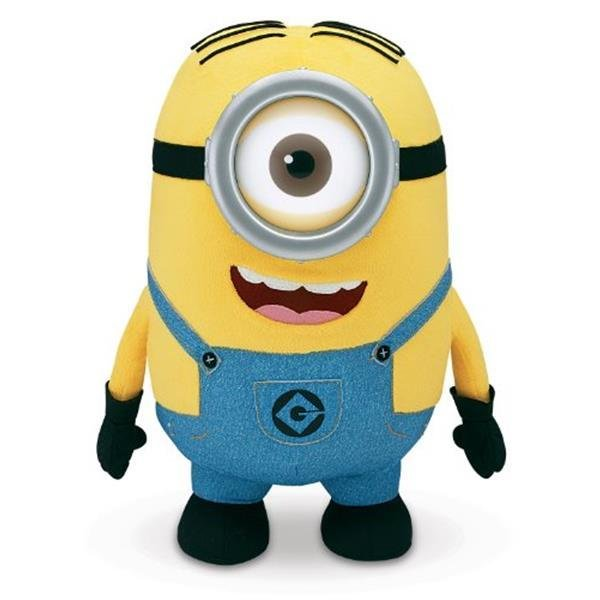

<!doctype html>
<html>

<head>
  <meta charset="utf-8">
  <title> Traversal- siblings </title>
  <script src="./jquery-3.6.0.min.js"></script>
  <script src="./jquery-ui-1.8.23.custom.min.js"></script>
  <script>
    $(()=>{
      /*
        siblings() - 선택요소를 제외한 나머지 형제 요소들을 선택
        siblings(필터) - 필터에 특정요소나 요소명을 쓰면 다른형제요소들 중 특정 요소만 선택
      */

      // 전체 박스
      let tg = $("#container");

      // 미니언즈 300개 셋팅
      // 기존 요소에 계속 더하기 메서드 - append(요소) : 새요소 추가 / 이동
      for(let x=0;x<300;x++){
        tg.append('');
      }

      // 미니언즈 크기 변경
      tg.find("img").css({
        width:"100px"
      })
      .click(function(){
        $(this).animate({
          width:"200px"
        },500)
        .siblings().delay(500).animate({
          width:"50px"
        },500)
        // 추가 미션: siblings(필터)를 활용한 테두리 주기
        // 클릭된 미니언즈 외에 class가 my인 클릭된 요소 이외에 형제들에게 테두리주기
        $(this).css({
          border:"none"
        })
        .siblings(".my").css({
          border:"5px dotted orange"
        })
      });
      // 미니언즈 이미지 클릭 시
      // 클릭된 미니언즈는 200px로 커지는 애니메이션
      // 나머지 미니언즈는 50px로 작아지는 애니메이션

      // 미니언즈 중 7n+1번째 이미지에 클래스 my 넣기
      // class를 넣는 메서드는 addClass(클래스명)
      tg.find("img:nth-child(7n+1)").addClass("my");
      // n은 0부터 자동 적용 - css에서도 적용
    });
  </script>
  <style>
    div,
    p {
      float: left;
      margin: 10px;
      background-color: #FFF;
    }

    div#sub {
      width: 80px;
      height: 80px;
      border: #000 thin solid;
    }

    p {
      width: 50px;
      height: 50px;
      border: #000 thin solid;
    }

    .my{
      border-radius: 50%;
      animation: rot 2s linear infinite;
    }
    @keyframes rot {
      to{transform: rotate(360deg);}
    }
  </style>
</head>

<body>
  <div id="container">
    


  </div>
  <!---------- jQuery code Start ---------->
  <script>

  </script>

</body>

</html>